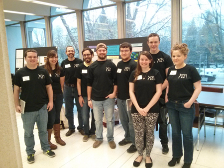

Traveler's Notebook: Monster Tales
ABOUT
Traveler’s Notebook: Monster Tales is a two-player narrative-driven game where players are authors who are traveling the world, encountering monsters from various cultures, in order to get inspiration for their stories. When it is a player’s turn, they select a location and choose how they want to react to the monster with which they have come face-to-face. The other player then reads to them the tale of their encounter and they are able to choose whether they would like to exercise one of their skills. Through these encounters, players can gain additional skills, as well as inspiration points.The first player to 100 inspiration points wins!
We recommend at least a 4th grade reading level.
RESEARCH
Members of Studio 368 presented our research at GLS 12. The paper will be published in the conference proceedings, and in the meantime, you can download it here:
Paul Gestwicki, Kaley Rittichier, and Austin DeArmond. “Culture-narration games: a definition and pilot study,” in Proceedings of 12th Conference on Games+Learning+Society, 2016. ETC Press (to be published).
STUDIO 368
We are a multidisciplinary team of ten undergraduate students representing Animation, Computer Science, Creative Writing, Philosophy, and Telecommunication majors. We are working with a faculty mentor to investigate how to promote cultural empathy in a narrative-driven digital game.
- Nicholas Boyer
- Ashley Cox
- Paco DeArmond
- Paul Gestwicki
- Jessica Lohse
- Jack McGinnis
- Lucas Miller
- Kaley Rittichier
- Josh Schoen
- Brennan Wade
- Caleb Woods
Source Code
This is free software licensed under GPLv3, and the source code is available on GitHub.
Acknowledgements
Special thanks to:
- Connection Corner
- Ball State University, especially: